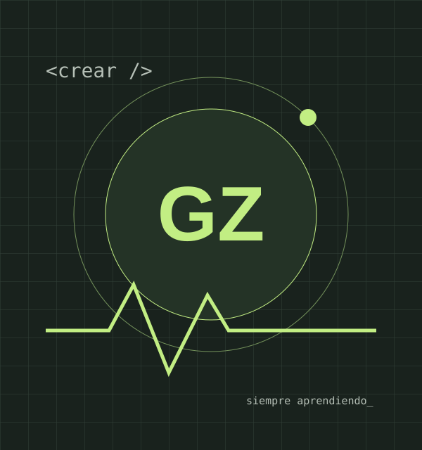

Desarrollo web
Estructuras semánticas, estilos propios y páginas que se adaptan a distintas pantallas.
ESTUDIANTE DE DESARROLLO DE SOFTWARE
Aprender, crear
y aportar algo útil.
Me estoy formando en desarrollo de software. Exploro cómo transformar una idea en una solución clara, práctica y cercana a las personas.

01 / SOBRE MÍ
Soy Gabriel Zarza. Estudio desarrollo de software y practico con proyectos que combinan programación, diseño y resolución de problemas.
En mi formación trabajo con C#, Windows Forms, MySQL, Python, HTML y CSS. Me interesa entender cómo funciona cada parte y seguir mejorando con la práctica.
02 / LO QUE ESTOY APRENDIENDO
Conocimientos en formación,
puestos en práctica.
Estructuras semánticas, estilos propios y páginas que se adaptan a distintas pantallas.
Clases, objetos e interfaces de escritorio para organizar datos y resolver consignas.
Prácticas con bases de datos y repositorios para organizar y compartir el trabajo.
03 / FUERA DEL CÓDIGO
Mi experiencia como bombero también forma parte de quién soy. El trabajo en equipo, la responsabilidad y la comunicación son valores que conecto con mi aprendizaje en tecnología.
Me interesa pensar herramientas que acompañen necesidades reales, como la organización de convocatorias y salidas de dotaciones.
Aprender para poder aportar.04 / CONTACTO
Podés escribirme por correo o conocer mis trabajos en GitHub.
gabrielzarza741@gmail.com ↗